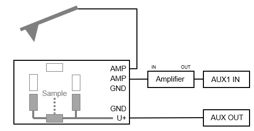
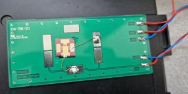
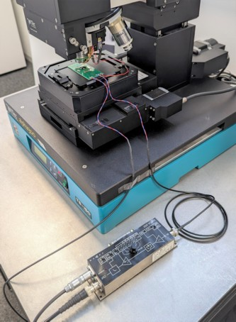

|
样品安装
|
对于样品安装，建议使用WITec提供的电路板样品支架。该支架已被证明能提供可靠的电连接。
样品需要连接到由AUX输出提供的偏压。因此，可以使用电路板上三个灰色标记的焊盘。样品可以直接用导电漆粘在其中一个焊盘上以便从下方连接，也可以通过电缆连接。导电漆适合将样品粘在电路板上，因为之后可以用溶剂轻松去除。重要的是，样品或至少感兴趣的部分不能接地。
为了连接悬臂梁臂，需要在电路板和臂之间进行短直接电缆连接。

图1：样品支架和外部放大器的布线图。


图2：固定在样品支架上的参考样品（左）和安装在alpha300中的支架（右）。
提示